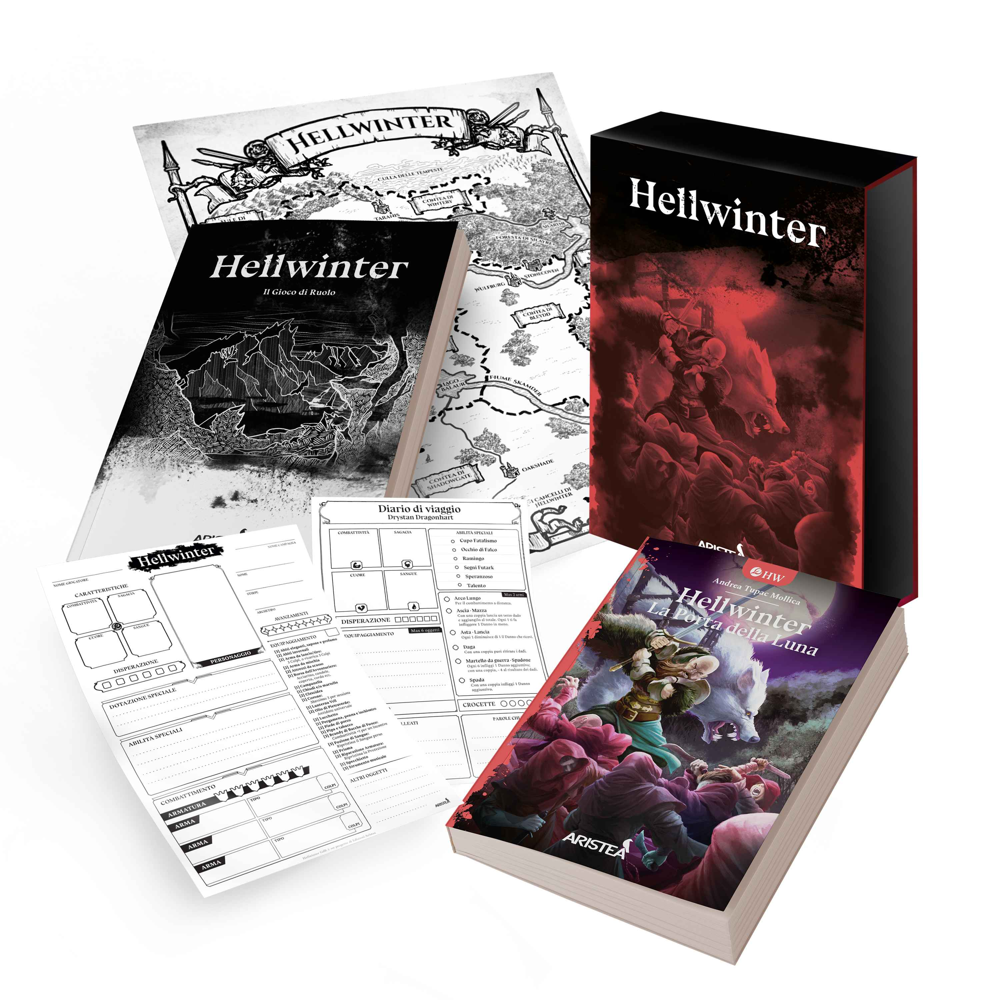
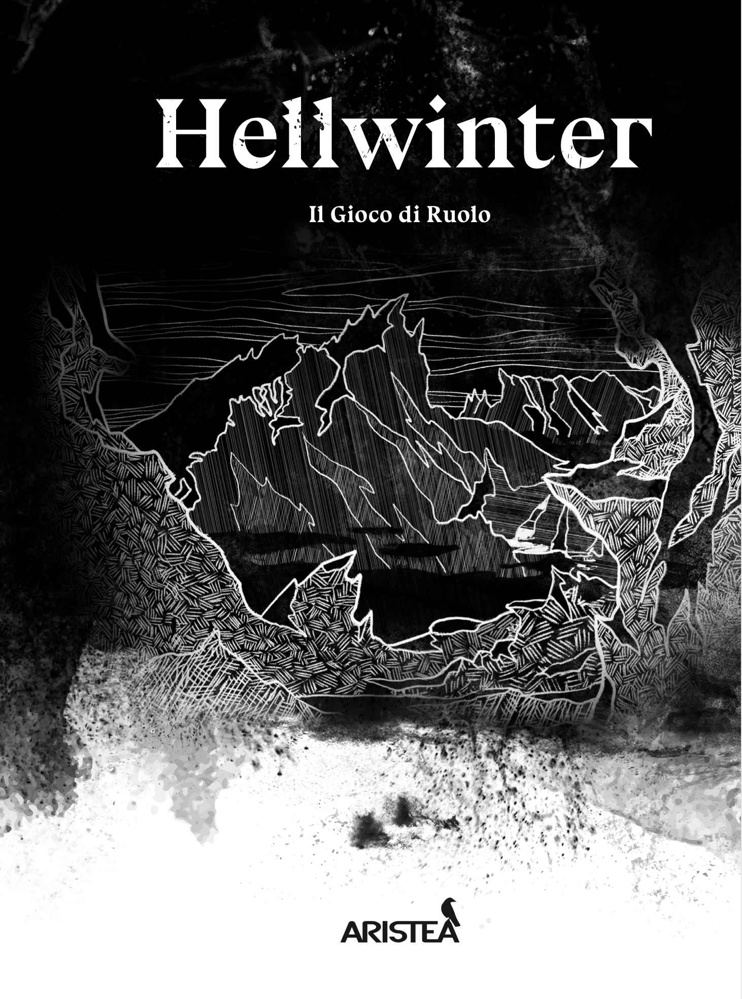

Un cofanetto che unisce libro game, gioco di ruolo e mappe illustrate: Hellwinter — La Porta della Luna è un progetto che ci ha colpiti per atmosfera ed emozioni.

In breve
Autore: Andrea Tupac Mollica · Editore: Aristea · Anno: 2025 · Formato: Cofanetto (Libro Game + Manuale GDR + Mappa + Scheda)
Introduzione
Hellwinter: La porta della Luna Capitolo 1 - Introduzione “Sono stanco, lo è anche Selgar il mio Wulfheru, ma Colwyn Storm il capitano della Grigia Compagnia è stato irremovibile, Sandor Wight il Negromante è evaso dalle carceri di Stormhold: Non c'è tempo da perdere! Ed ha proprio ragione: Non c'è tempo da perdere! Dopo avere viaggiato verso Sud, verso Stormhold, tutta la giornata, ho da poco raggiunto le propaggini di un piccolo gruppo isolato di colline boscose al crepusolo. Per fortuna intravedo l'ingresso di una grotta profonda ed abbastanza larga per ospitare sia me che Selgar. Ma con le tenebre, l'eco di uno strano canto, giunge al mio orecchio ritmato dal bagliore dei tuoni che si stanno allontanando a sud ,assieme al temporale a cui s'accompagnano..”
Il Progetto Editoriale
Capitolo 2 - Il progetto editoriale Così potrebbe iniziare la tua avventura nei panni di Drystan Dragonhart, il personaggio che interpreterai nella Baronia di Hellwinter sulle tracce di Sandro Wight, un pericoloso Negromante. Giocando al Libro Game “La Porta della Luna”. “Hellwinter :La porta della Luna” più che un libro game, è un progetto editoriale . Scritto da Andrea Tupac Mollica ed edito da Aristea, si presenta come un bellissimo cofanetto che comprende: libro game “La Porta della Luna”, manuale del gioco di ruolo “Hellwinter”, mappa della Baronia di Hellwinter e scheda personaggio. Meritatamente vincitore alla Play di Bologna 2025 del “Libro Game Magnifico” “Hellwinter La porta della luna” ci ha completamente affascinati.
Immersività
Capitolo 3 - Immersività La cosa che ci ha colpita subito del libro è lo studio per la più profonda immersività. Tutto concorre ad una immersione completa: i QR code a inizio capitolo che danno l'accesso a dei soundscape sonori per poter leggere e ascoltare delle cupe atmosfere della Baronia, la mappa divinamente illustrata da Fabio Porfidia, la scrittura di Andrea Tupac Mollica.. Tutto concorre a farti calare prepotentemente nei panni del Grigio Compagno.
Drystan Dragonhart
Capitolo 4 - Drystan Dragonhart Ma il vero valore di questo libro, secondo noi, va oltre l'esplorazione geografica dellla Baronia di Hellwinter, , ma è bensì l'emozionante esplorazione del panorama emotivo del personaggio Drystan DragonHart Il libro vi permette di fare scelte che vi consentono accesso al suo paesaggio interiore, ai suoi dubbi, ai suoi pensieri, alle sue emozioni, suoi svaghi, le sue pulsioni, alla sua umanità. Drystan non è un eroe freddo, imperscrutabile, al limite di un androide, nonostante viva in una Baronia completamente ammantata dalla Disperazione. E' un personaggio che può essere timido, impacciato, si può innamorare.. E questo ti cala ancora di più nel mondo di Hellwinter, che cos'è la Disperazione? Quali sono le energie con cui puoi resistere a questa disperazione? Cosa può ancora accendere la luce della Speranza?
Il Sistema di Gioco
Capitolo 5 - Il sistema di gioco Il sistema di gioco è molto semplice e si basa su 3 caratteristiche: Combattività, Sagacia, e Cuore. Si utilizza una coppia di d6 e si deve superare il valore di difficoltà indicato dalla prova , sommando i 2 d6 e aggiungendo il valore di cartteristica.. Il combattimento è sempre un roll over modificato dalla caratteristica, ma utilizza un sistema molto rapido e veloce per definire l'esito del combattimento, tutto sempre a favore dell'immersività. E di questo non possiamo altro che esserne entusiasti. Inoltre all'interno del libro ci sono delle divertenti miniquest da affrontare.
Dal Libro al GDR
Capitolo 6 - Dal libro al GDR Leggere questo libro è molto importante per poi passare al manuale del gioco di ruolo, perchè avendone già assaporato le atmosfere, calarsi nel manuale e trasmettere poi le atmosfere ai giocatori che saranno protagonisti delle tue avventure sarà decisamentte più semplice. Veramente un prodotto che ci ha fatto innamorare!
Conclusione
Capitolo 7 - Conclusione Gloria e Dadi! Grim e i Cani di Odino.

“Il libro vi permette di fare scelte che vi consentono accesso al suo paesaggio interiore, ai suoi dubbi, ai suoi pensieri, alle sue emozioni.”
🛒 Dove Acquistare
Se vuoi aggiungere Hellwinter: La Porta della Luna alla tua collezione, puoi trovarlo qui:
Ti è piaciuto questo articolo?
Seguici sui social per non perdere i prossimi contenuti e condividi questo articolo con la tua community!